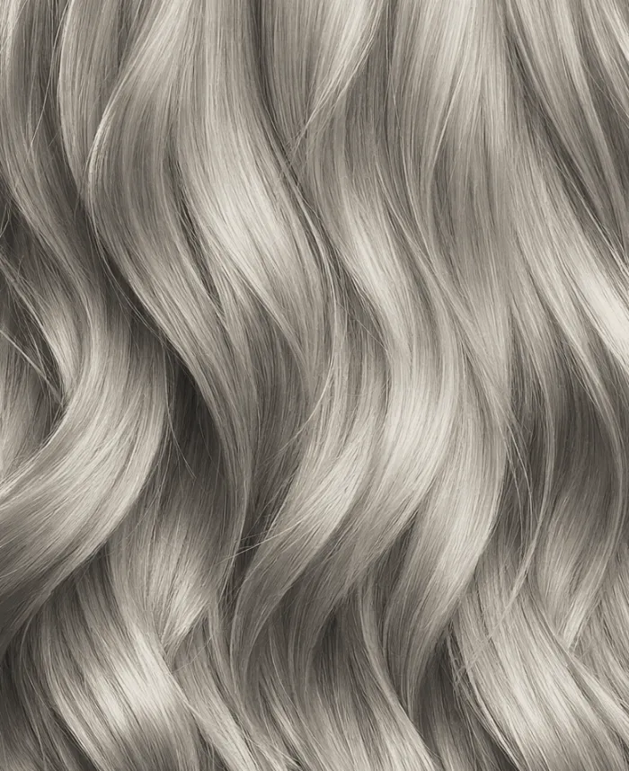
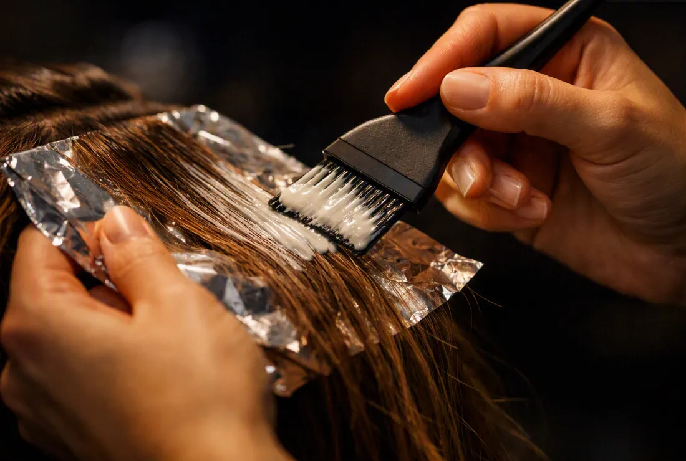
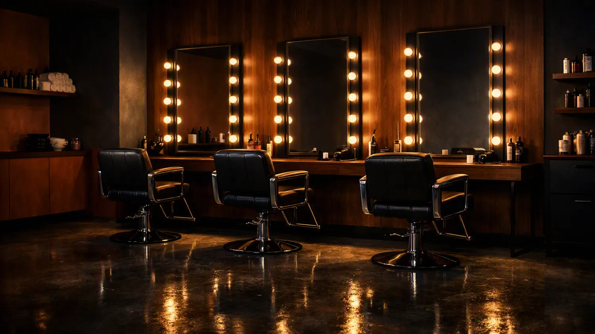
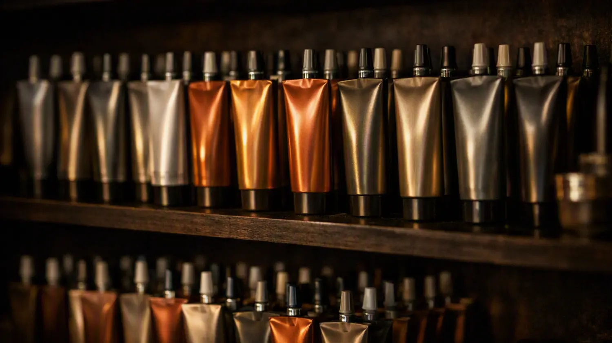
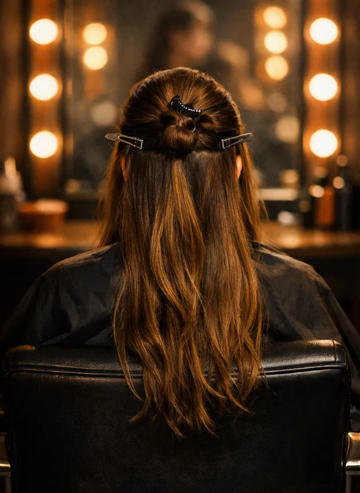
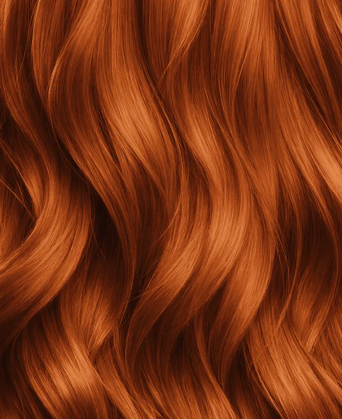
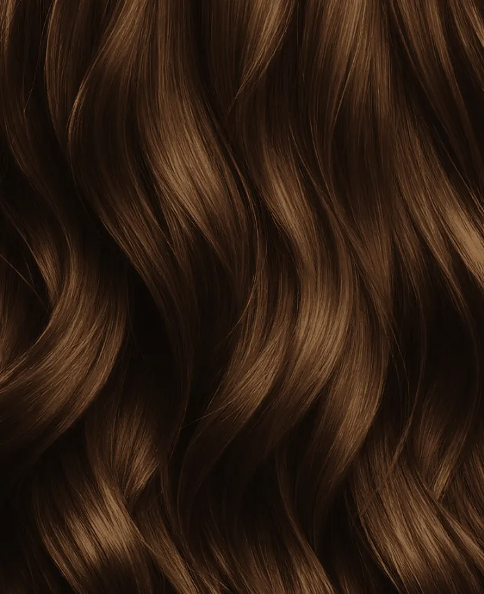
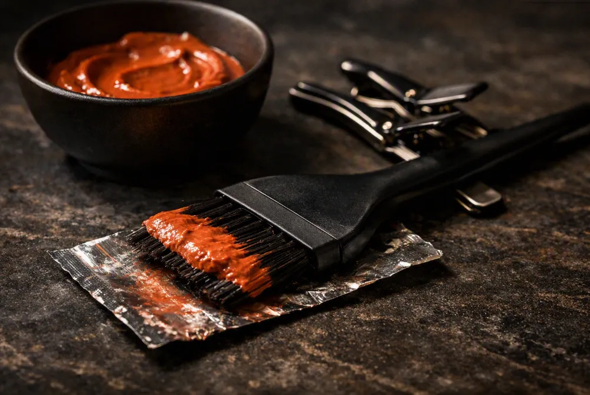

АняБлонд и всё, что рядом
Восемь лет в цвете. Не возьмётся за осветление, если волосы его не выдержат — скажет об этом на консультации, а не после второго обесцвечивания.
Салон сложного окрашивания. Одна услуга, один зал, три колориста. Приходите с любым исходным цветом — скажем честно, что получится, а что нет, ещё до того, как вы сядете в кресло.
● Свободное время видно сразу — спрашивать и ждать ответа не нужно
Только волосы и только цвет. Стрижку, укладку и уход отправляем к соседям — сами делаем одно, зато каждый день.

Освежить свой цвет, убрать желтизну, добавить блеск. Без осветления, волосам ничего не будет.
Отросшие корни в цвет длины. Нужно раз в шесть-восемь недель, напомним сами за неделю.
Airtouch, шатуш, балаяж. Переход от корней к концам плавный, поэтому отрастает незаметно и ходить к нам можно реже.
Из тёмного в светлый. За один визит получается не всегда — скажем на консультации, сколько понадобится, до того как начнём.
Пятна, зелень, рыжина после смывки, полосы после домашней краски. Беремся и за чужие ошибки, и за свои.
Цена зависит от длины и густоты волос. Точную сумму колорист называет до начала работы, а не после.
Если по дороге выясняется, что нужно больше времени или денег — работа останавливается и решаете вы.

Три кресла. Больше в зал не ставим.
Четвёртое кресло — это очередь в коридоре и колорист, который смотрит на часы. Мы посчитали и решили, что нам это не нужно.
Это не картинка расписания. Свободное время считается с учётом того, сколько идёт услуга и что уже занято у колориста.

Каждый ведёт своё направление. Записываться к конкретному не нужно — на консультации скажем, чья это работа, и отдадим ему.
Смотреть будет тот, кто свободен. Если работа не его — передаст коллеге при вас, а не молча возьмётся.

Восемь лет в цвете. Не возьмётся за осветление, если волосы его не выдержат — скажет об этом на консультации, а не после второго обесцвечивания.

Двенадцать лет, шесть из них преподавала колористику. Любимая работа — вывести из чёрного в медь так, чтобы не осталось рыжих пятен на висках.

Девять лет. К ней чаще приходят исправлять: зелень после смывки, полосы от домашней краски, чужой неудачный балаяж. Спокойно относится к «я сама покрасилась».
Через сутки после визита бот сам просит оценить работу. Публикуем всё подряд, включая тройки — иначе в отзывах нет смысла.

Пришла с чёрным после домашней краски и была готова услышать «приходите через полгода». Аня расписала два визита с перерывом в месяц и назвала обе суммы сразу, до того как начала. Второй визит был вчера — я блондинка, волосы живые.
Цветом довольна, сделали ровно как обсуждали. Но приняли на двадцать минут позже назначенного и никто не предупредил.
Корни закрасили хорошо, вопросов нет. Но за семь с половиной тысяч я ждала, что предложат хотя бы уложить. Оказалось, укладку тут просто не делают — узнала уже на месте.
После смывки волосы позеленели, я почти рыдала. Убрали за один визит и объяснили, почему так вышло.
Хожу третий год. Отрастает — и не видно, что отросло. Собственно, ради этого и делаю.